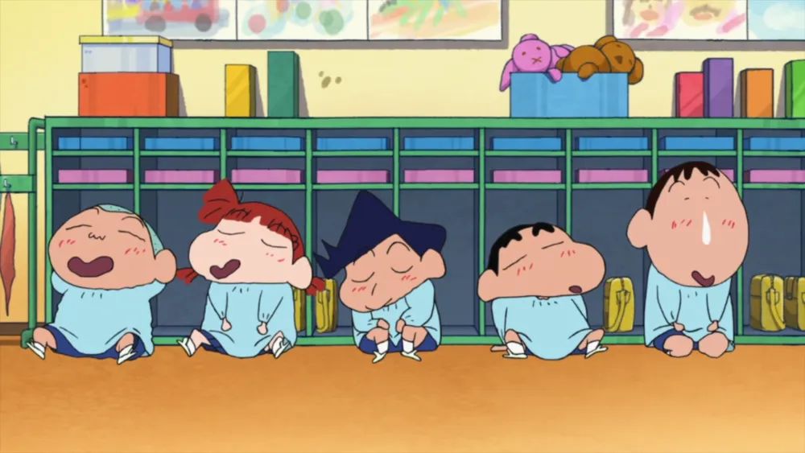
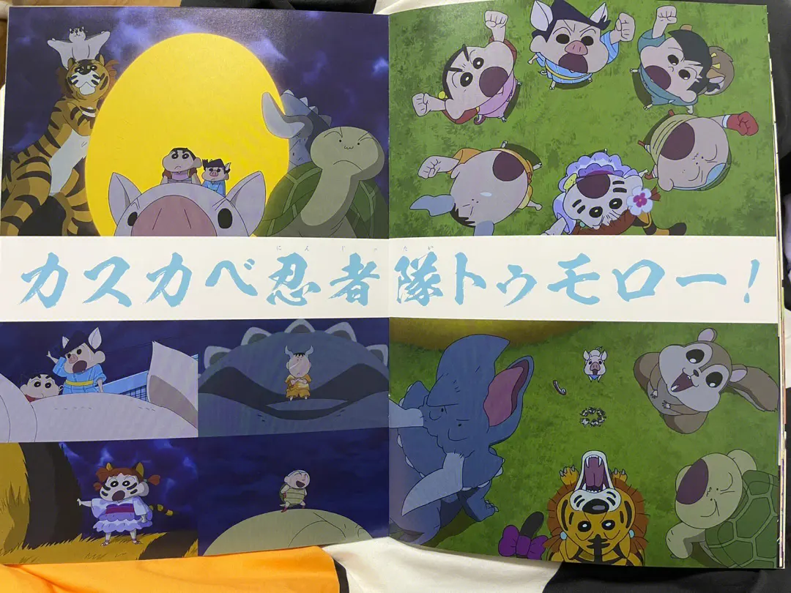
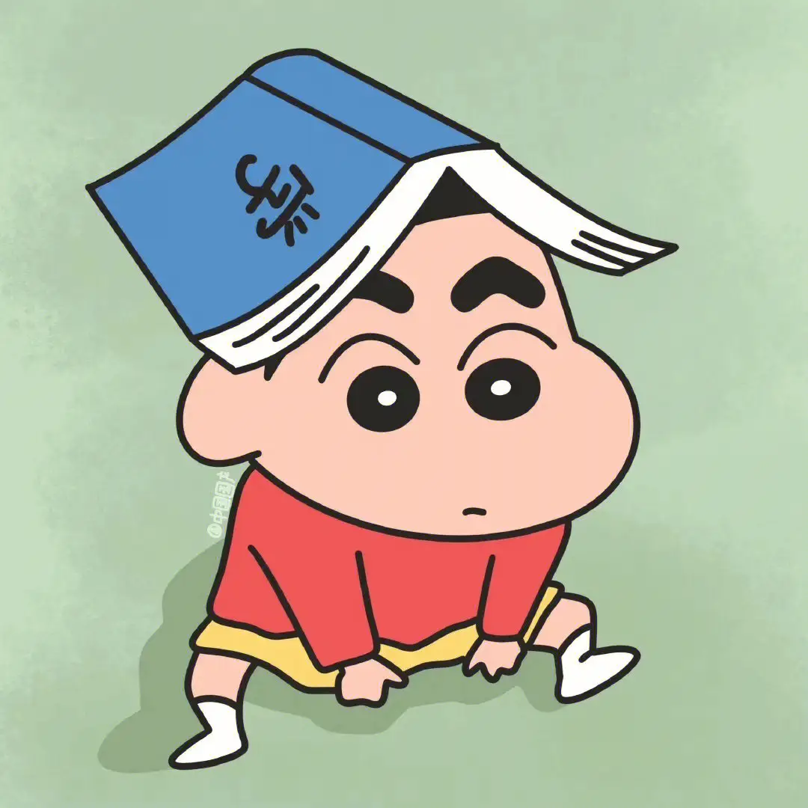
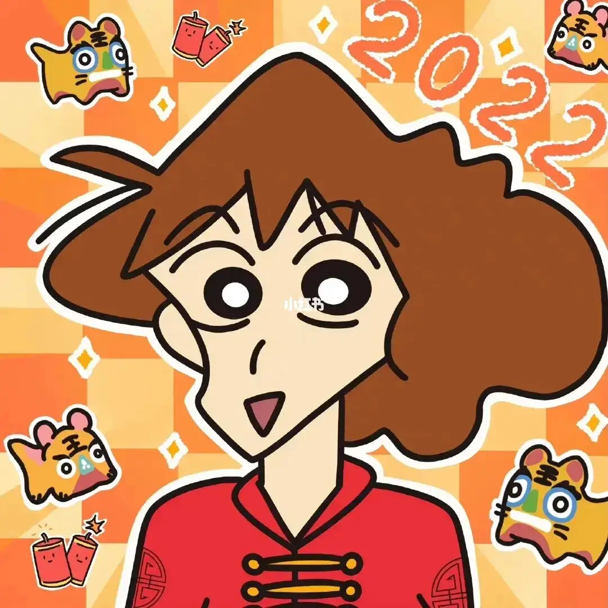
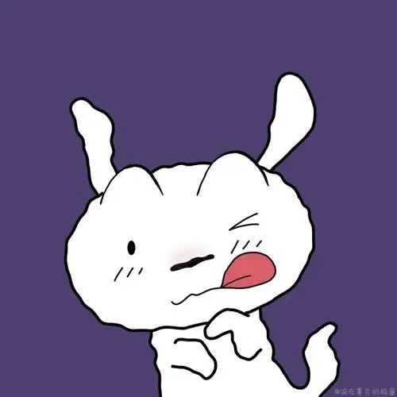

|
| 蜡笔小新电影(点我） |
 |
蜡笔小新剧场版2022：三十周年纪念新作《幽灵忍者珍风传》，对于小新来说很重要的一笔，借忍者的主题，揭开了新之助诞生的秘密。影片讲述的是呼风唤雨的5岁小孩化身“忍者”，用笨蛋忍术拯救地球“明天”的故事。 剧场版中，野原一家面前出现了自称为“珍藏”的女性以及小孩，他们说“珍藏”是野原家“真正的孩子”，并带走了小新。接着新之助被待到一个“忍者之乡”，而他的“父亲”竟然是大猩猩，作为屁祖隐一家的继承人，新之助需要守护黄金的“地球肚脐”。如果“地球肚脐”失守，地球就会迎来末日，“明天”就不会到来。剧情核心围绕野原一家、新之助五小只与珍藏一家守护和拯救地球的“明天”。 这部剧场版动漫最精彩的片段有很多，例如新之助在面对未知挑战时勇敢果断的表现，以及他在出现危机的时候所展现出的聪明才智和毅力。 从这部动漫中值得学习和借鉴的地方来说，首先就是新之助的勇敢和无畏。在面对自称为“珍藏”的女性以及小孩时，他并没有表现出任何的恐惧和退缩，而是积极地参与到他们的游戏中，并且一步步地解开谜团。这种勇敢和无畏的精神，是我们在面对生活中的困难和挑战时也应该具备的。 其次就是新之助的聪明才智和毅力。在剧中，新之助需要用各种方法解开谜团，找到黄金的所在之处。他不仅展现出了超乎常人的聪明才智，还表现出了坚定的毅力，不断地寻找线索、破解谜团。这种聪明才智和毅力的精神，也是我们在学习和工作中应该具备的。 最后就是剧中所展现出的家庭之间的深厚感情。野原一家和新之助之间的互动和交流，展现出了家庭之间的深厚感情和互相支持的精神。这种精神也是我们在生活中应该积极追求的，无论是在家庭生活中还是在社会生活中，都需要我们注重家庭成员之间的情感交流和互相支持。 |
|  |  |  | ||
| 小新（主角） | 广志（小新的爸爸） | 美伢（小新的妈妈） | 小葵（小新的妹妹） | 小白（小新的兄弟） |